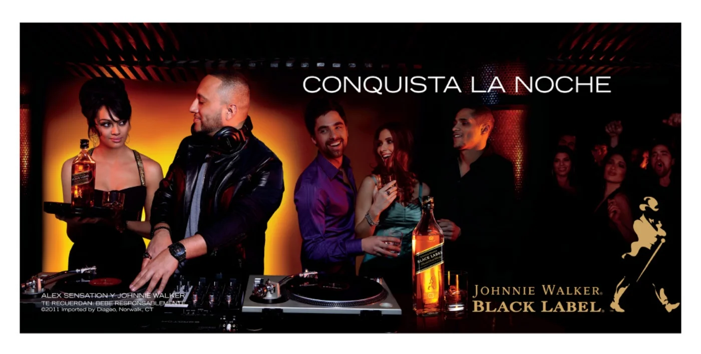
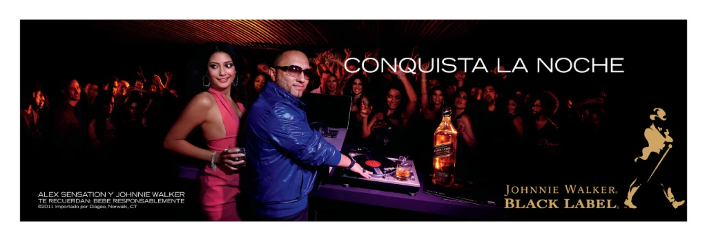
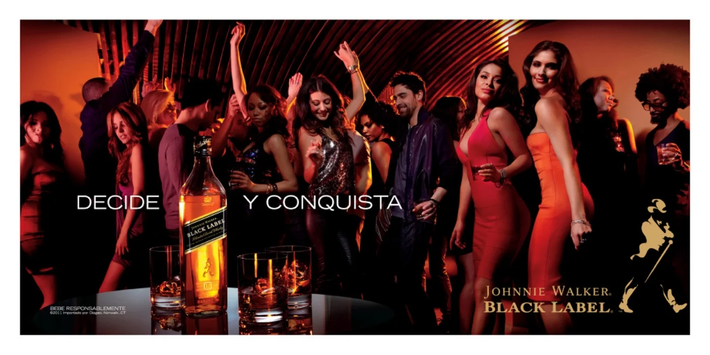
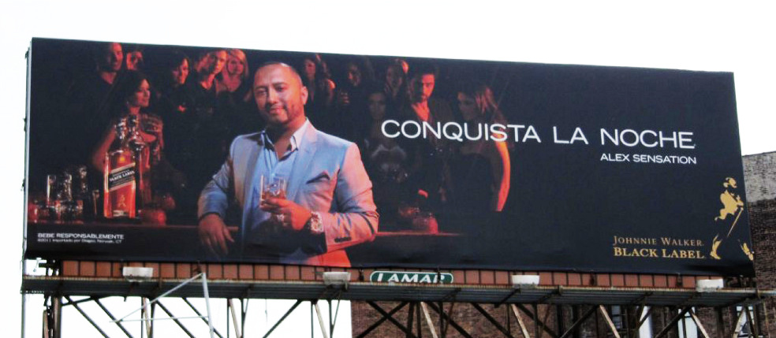
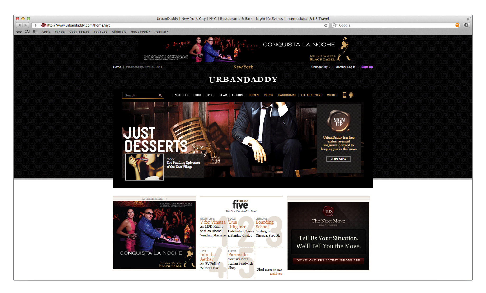

CONQUISTA LA NOCHE
Associate Creative Director, Copy
Grey NY | WING
Never Lose Control — Spanglish
Never Lose Control — Spanish

OOH 1

OOH 2

OOH 3

OOH 4 — Queens Billboard

Digital Placement
THE CHALLENGE
Johnnie Walker Black Label had deep roots in Latino culture — but those roots were underground. The ritual was intimate: basement gatherings with fathers, uncles, brothers, the occasional Cohiba. Respectful. Traditional. Invisible. To grow the brand, we needed to bring it into the light. Into nightlife. Into New York City.
THE INSIGHT
Latino men didn't need permission to drink Johnnie Walker. They needed a new context. The basement ritual was about bonding. Nightlife was about celebration. Same values, different venue. We needed a bridge — someone who lived in both worlds. Alex Sensation: NYC's #1 Latino DJ. A conquistador who conquered turntables and dance floors.
THE WORK
We built the campaign around Alex as the Nightlife Conquistador. Renowned nightlife and fashion photographer Jessica Craig-Martin captured every moment — turntable conquests, dance floor domination. The visuals ran across NYC OOH and targeted digital. But we saved Alex's golden voice for the most important message: Never Lose Control. Two radio spots — one Spanglish, one Spanish — promoting responsible drinking any way you mix it.
THE IMPACT
The campaign brought Johnnie Walker Black Label into nightlife. Alex Sensation's voice moved from the basement to the streets. The OOH blanketed NYC — from subway platforms to billboards in Queens. One weekend, I was on a bike ride and saw it: my first billboard in New York City. The work had made it out of the office and onto the streets. Conquista la noche.